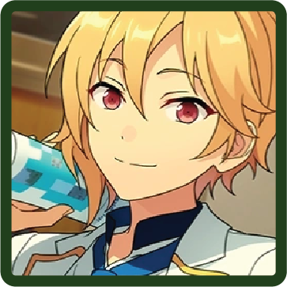
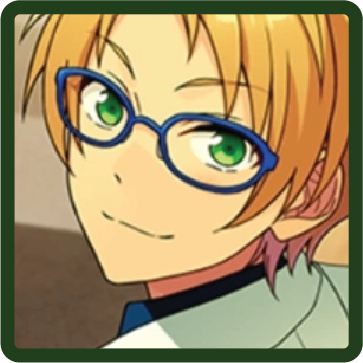

♪ the ocean envoy who watches over you with puka puka
Kanata Shinkai

An idol who loves the ocean, and is searching for his own way to live as a human being. He has a calm and carefree personality, and his home is the aquarium. He feels suffocated without water. With a softly swaying singing voice, his performances are relaxed.
He is RYUSEI Blue in STARMAKER PRODUCTION's RYUSEITAI.
MORE INFORMATION
BIO
Birthday
Sep. 6th
Hobby
Reading
Specialty
Shamisen
Idol Color
#316745
Likes
Glasses
Dislikes
Soybeans
UNITS
RYUSEITAI
Chiaki Morisawa

Kanata Shinkai
Tetora Nagumo

Midori Takamine

Shinobu Sengoku

The Five Eccentrics / Altered (Temporary)
Selected and persecuted by the Student Council during the war.
Rei Sakuma

Wataru Hibiki

Kanata Shinkai
Shu Itsuki

Natsume Sakasaki
Team Ushiwakamaru (Temporary)
Kanata Shinkai
Souma Kanzaki

Mitsuru Tenma

Getto Spectacle (Shuffle Unit)
This shuffle unit was formed to star in a certain program that produces modern retellings of classic stories. The group center is Hiyori Tomoe.
Hiyori Tomoe
Tatsumi Kazehaya

Hokuto Hidaka

Kanata Shinkai
Arashi Narukami

CLUBS (!-Era)
The Marine Biology Club
Kanata Shinkai
Souma Kanzaki
Kaoru Hakaze

CIRCLES (!!-Era)
OCEANS Biology Club
A circle organized by Kanata that focuses on interacting with sea creatures and thinking about the environment and biology. They periodically go to zoos and aquariums in search of a soothing atmosphere.
Kanata Shinkai
Izumi Sena

Souma Kanzaki
Kaoru Hakaze
Shinobu Sengoku
Mystery Researchers
An extraordinarily curious circle that tours power spots brimming with divine energy and goes out searching for creatures of legend. There are also days when they shut themselves in a room and don’t go anywhere.
Rei Sakuma
Nazuna Nito
Tsumugi Aoba

Kanata Shinkai
Makoto Yuuki
RELEVANT STORIES
Flower Festival

SCOUT STORIES
Fresh Green Martial Artist